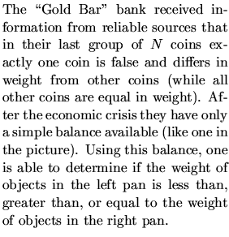
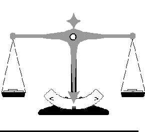
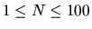
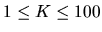
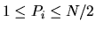

| False coin |
 
In order to detect the false coin the bank employees numbered all coins by the integers from 1 to N, thus assigning each coin a unique integer identifier. After that they began to weight various groups of coins by placing equal numbers of coins in the left pan and in the right pan. The identifiers of coins and the results of the weightings were carefully recorded.
You are to write a program that will help the bank employees to determine the identifier of the false coin using the results of these weightings.
The first line of each dataset contains two integers N and K, separated by spaces, where N is the number of coins ( ) and K is the number of weightings fulfilled ( ). The following 2K lines describe all weightings. Two consecutive lines describe each weighting. The first of them starts with a number Pi ( ), representing the number of coins placed in the left and in the right pans, followed by Pi identifiers of coins placed in the left pan and Pi identifiers of coins placed in the right pan. All numbers are separated by spaces.
The second line contains one of the following characters: `<', `>', or `='. It represents the result of the weighting:
1 5 3 2 1 2 3 4 < 1 1 4 = 1 2 5 =
3